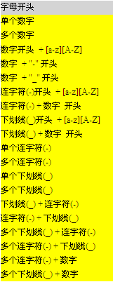
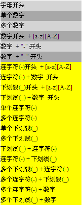
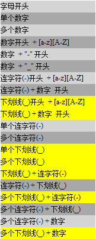
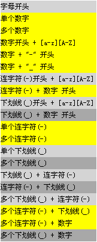
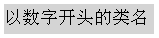

关于选择器的命名
W3C CSS 2.1 的 4.1.3 节中提到：标识符（包括选择器中的元素名，类和 ID）只能包含字符 [a-zA-Z0-9] 和 ISO 10646 字符编码 U+00A1 及以上，再加连字号（-）和下划线（_）；它们不能以数字，或一个连字号后跟数字为开头。它们还可以包含转义字符加任何 ISO 10646 字符作为一个数字编码。
由于涉及到的字符很多，本文只针对字符 [a-zA-Z0-9] ，再加连字号（-）和下划线（_）进行讨论。
关于 CSS 中允许使用的字符和大小写的详细资料，请参考 CSS2.1 规范 4.1.3 中的内容。
不合法的类选择器名称可能造成兼容性问题。
严重情况下可能造成布局混乱，页面无法使用。
| 所有浏览器 |
|---|
在 W3C CSS 2.1 说明文档中，只提到选择器标识符不能以数字，或一个连字号后跟数字为开头。除此之外，没有相关的说明。那么各浏览器下的表现是否遵循这一规则呢？
分析以下代码：
<style type="text/css">
div{width:160px;height:20px;font-size:12px;line-height:20px;background-color:yellow;}
.t-1_t_{background-color:#d4d4d4;} .1{background-color:#A8A8A8;} .123456{background-color:#d4d4d4;}
.2test{background-color:#A8A8A8;} .2-test{background-color:#d4d4d4;} .2_test{background-color:#A8A8A8;}
.-test{background-color:#d4d4d4;} .-2test{background-color:#A8A8A8;} ._test{background-color:#d4d4d4;}
._2test{background-color:#A8A8A8;} .-{background-color:#d4d4d4;} .---{background-color:#A8A8A8;}
._{background-color:#d4d4d4;} .___{background-color:#A8A8A8;} ._-{background-color:#d4d4d4;}
.-_{background-color:#A8A8A8;} .___-{background-color:#d4d4d4;} .---_{background-color:#A8A8A8;}
.---123{background-color:#d4d4d4;} .___123{background-color:#A8A8A8;} </style> <div
class="t-1_t_">字母开头</div> <div class="1">单个数字</div> <div
class="123456">多个数字</div> <div class="2test">数字开头 +
[a-z][A-Z]</div> <div class="2-test">数字 + "-" 开头</div> <div
class="2_test">数字 + "_" 开头</div> <div
class="-test">连字符(-)开头 + [a-z][A-Z]</div> <div class="-2test">连字符(-)
+ 数字 开头</div> <div class="_test">下划线(_)开头 + [a-z][A-Z]</div> <div
class="_2test">下划线(_) + 数字 开头</div> <div
class="-">单个连字符(-)</div> <div class="---">多个连字符(-)</div>
<div class="_">单个下划线(_)</div> <div
class="___">多个下划线(_)</div> <div class="_-">下划线(_) +
连字符(-)</div> <div class="-_">连字符(-) + 下划线(_)</div> <div
class="___-">多个下划线(_) + 连字符(-)</div> <div class="---_">多个连字符(-) +
下划线(_)</div> <div class="---123">多个连字符(-) + 数字</div> <div
class="___123">多个下划线(_) + 数字</div>
这段代码在不同的浏览器环境中表现如下：
| IE6(S) | IE6(Q) | IE7(Q) IE8(Q) | IE7(S) IE8(S) Firefox Safari Chrome Opera |
|---|---|---|---|
|  |  |  |  |
观察上表，分析各浏览器下的表现，总结如下：
| 选择器命名 | IE6(S) | IE6(Q) | IE7(Q) | IE8(Q) | IE7(S) | IE8(S) | Firefox | Opera | Safari | Chrome |
|---|---|---|---|---|---|---|---|---|---|---|
| 字母开头 | Y | Y | Y | Y | Y | Y | Y | Y | Y | Y |
| 数字/数字开头 | N | Y | Y | Y | N | N | N | N | N | N |
| "-"开头+数字 | N | N | Y | Y | N | N | N | N | N | N |
| "-"/多个"-" | N | N | Y | Y | N | N | N | N | N | N |
| "-"开头+非数字 | N | N | Y | Y | Y | Y | Y | Y | Y | Y |
| "_"开头 | N | N | N | N | Y | Y | Y | Y | Y | Y |
由上表，我们可以直观的了解到选择器的命名在各浏览器下的支持情况有所不同。因此，如果选择器的命名不规范，将影响各浏览器下，样式渲染不一致。比如如下代码：
<style type="text/css">
div{font-size:12px;background-color:yellow;width:150px;height:30px;line-height:30px;}
.18fontsize{font-size:18px;background-color:#d4d4d4;} </style> <div
class="18fontsize">以数字开头的类名</div>
这段代码在不同的浏览器环境中表现如下：
| IE6(Q) IE7(Q) IE8(Q) | IE6(S) IE7(S) IE8(S) Firefox Safari Chrome Opera |
|---|---|
|  |
以数字开始的类名仅在 IE6(Q) IE7(Q) IE8(Q) 下被识别，而其它浏览器下则不识别（忽略该规则）。
坚持以字母开头命名选择器，这样可保证在所有浏览器下都能兼容。
| 操作系统版本: | Windows 7 Ultimate build 7600 |
|---|---|
| 浏览器版本: |
IE6
IE7 IE8 Firefox 3.6.2 Chrome 5.0.356.2 dev Safari 4.0.4 Opera 10.50 |
| 测试页面: |
css_selector_name.html
css_selector_name_prefix_number.html |
| 本文更新时间: | 2010-06-29 |
selector rules 选择器 fault-tolerant 容错